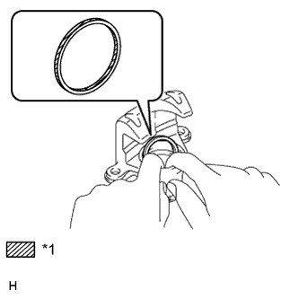
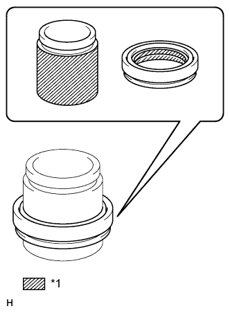
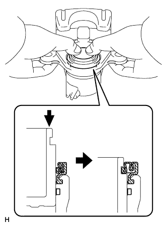

ЗАДНИЙ ТОРМОЗ > ПОВТОРНАЯ СБОРКА |
| 1. УСТАНОВИТЕ УПЛОТНЕНИЕ ПОРШНЯ |
|  |
Нанесите тонкий слой гликолевой смазки на основе литиевого мыла на всю внутреннюю и всю наружную окружности нового уплотнения поршня.
| *1 | Гликолевая консистентная смазка на основе литиевого мыла |
Установите уплотнение поршня на колесный тормозной цилиндр заднего дискового тормоза.
| 2. УСТАНОВИТЕ ЗАЩИТНЫЙ КОЛПАЧОК ЦИЛИНДРА |
|  |
Нанесите тонкий слой гликолевой консистентной смазки на основе литиевого мыла на всю внутреннюю окружность нового защитного колпачка тормозного цилиндра.
| *1 | Гликолевая консистентная смазка на основе литиевого мыла |
Нанесите тонкий слой гликолевой консистентной смазки на основе литиевого мыла на всю наружную окружность поршня тормозного цилиндра заднего дискового тормоза в зоне контакта с колесным тормозным цилиндром заднего дискового тормоза.
Установите защитный колпачок цилиндра на поршень заднего дискового тормоза.
Установите поршень тормозного цилиндра заднего дискового тормоза в колесный тормозной цилиндр заднего дискового тормоза.
| 3. УСТАНОВИТЕ ПОРШЕНЬ ЗАДНЕГО ДИСКОВОГО ТОРМОЗА |
Установите защитный колпачок на колесный тормозной цилиндр заднего дискового тормоза.
|  |
Вдавите поршень тормозного цилиндра заднего дискового тормоза рукой и установите защитный колпачок в канавку поршня тормозного цилиндра.
| 4. ВРЕМЕННО УСТАНОВИТЕ ПРОКАЧНОЙ ШТУЦЕР ЗАДНЕГО ДИСКОВОГО ТОРМОЗА |
Предварительно установите прокачной штуцер заднего дискового тормоза на колесный тормозной цилиндр заднего дискового тормоза.
| 5. УСТАНОВИТЕ КОЛПАЧОК ПРОКАЧНОГО ШТУЦЕРА ЗАДНЕГО ДИСКОВОГО ТОРМОЗА |